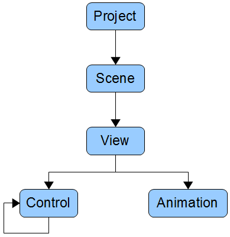

The OtterUI Hierarchy is roughly as follows:

The project contains scenes, scenes contain views, and views contain controls and animations. When creating a new project, how you choose to organize your scenes and views are largely left up to you. Examples of project organization include:
However you decide to organize your project is largely left to you, but it is recommended to not organize all views under a single scene. Multiple scenes can be loaded and interacted with at runtime, so it is much better and certainly recommended to organize your views into logical (and separate) scenes.
The Scene's only purpose is to manage the views it contains. It is responsible for ensuring that the OnActivate and OnDeactivate animations are called at the appropriate times, and also propagates input and events to the internal views. The View is where the real heavy-lifting occurs; it is responsible for maintaining and animating all of the controls that it owns.
Created with the Personal Edition of HelpNDoc: Single source CHM, PDF, DOC and HTML Help creation